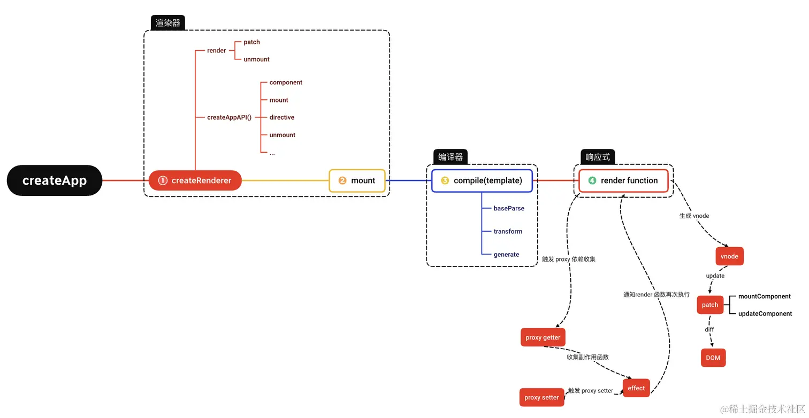
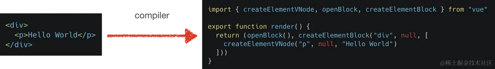

前面的章节，我们分别学完了 渲染器、响应式原理、编译器、内置组件、特殊元素&指令 这五大部分的内容，也大致清楚了各个部分的设计细节和原理，现在，让我们再把这些知识串联，回顾本课程开篇中的那张核心运行机制图：

相信这个时候我们再看这张图，相对而言理解起来就比较容易了。那么让我们再来宏观的梳理一遍整体的运作流程吧：
我们通常在使用 Vue.js 的时候，最开始的入口使用大多数场景如下：
js复制代码import { createApp } from 'vue'
import App from './App.vue'
createApp(App).mount('#app')
我们通过 createApp 的方式创建了一个渲染器对象 renderer，所谓渲染器，就是是用来执行渲染任务的，另外也能够进行框架跨平台能力的渲染任务，而这里我们讨论的是渲染器针对于浏览器端渲染成真实 DOM 的场景。
渲染器在初始化挂载阶段，通过渲染器内部的 patch 函数进行初始化挂载任务。将编译器输出的 render 函数执行后生成 vnode 节点，然后再将 vnode 渲染成真实的 DOM 挂载到指定容器中。
渲染器在更新阶段，则会根据编译器中输出的标记 PatchFlags 和 dynamicChildren 在 patch 时做到靶向更新。
编译器的作用简单概括就是将源代码 A 转换成目标代码 B。Vue.js 的源代码就是我们写的 template 函数，编译器的目标代码就是渲染函数：

编译器的核心流程经历了：
parse：接收字符串模板作为参数，并将解析后得到的 模版 AST 作为返回值返回。transform：接受 模板 AST 做为参数，语义化转换为 JavaScript AST 并返回。generate：接受 JavaScript AST 生成渲染函数并返回。响应式是 Vue.js 的核心部分，简而言之，响应式就是为了实现对需要侦测的状态数据进行监听，当状态数据变化时反馈给与状态数据相关的副作用函数重新执行。
Vue 3 通过 proxy API 完成了对响应式状态数据的定义，当在副作用函数中访问响应式数据时，进行副作用函数的收集（这里的副作用函数也可以是渲染函数）。当触发响应式状态数据更新时，再重新执行副作用函数。
针对于渲染函数（render）这种副作用函数而言，在重新执行的时候，则会比对新老的 vnode 节点情况进行选择性更新（diff）。
js复制代码const render = (vnode, container) => {
if (vnode == null) {
// 销毁组件
if (container._vnode) {
unmount(container._vnode, null, null, true)
}
} else {
// 创建或者更新组件
patch(container._vnode || null, vnode, container)
}
// 缓存 vnode 节点，表示已经渲染
container._vnode = vnode
}
另外值得一提的是，Vue 3 不管是在编译时还是在运行时都做了大量的性能优化。例如在编译时，Vue 3 通过标记 /*#__PURE__*/ 来为打包工具提供良好的 Tree-Shaking 机制，通过 静态提升 机制，避免了大量静态节点的重复渲染执行；在运行时又通过批量队列更新机制优化了更新性能，通过 PatchFlags 和 dynamicChildren 进行了 diff 的靶向更新...
通过这些精细的设计，我们可以在不了解 Vue.js 运行原理的基础上，写出性能卓越的前端代码，降低了开发者的心智负担。
本课程的内容核心是介绍 Vue 3 设计和实现原理，帮助小伙伴们构建起对 Vue 3 运行机制的广度和深度认知。课程里面呢有部分内容会和 Vue 2.x 进行一些比较，如果小伙伴们不熟悉不了解 Vue 2.x 的设计原理，可以选择性屏蔽这块的知识点，只看 Vue 3 的相关内容就可以了，毕竟 Vue 3 才是面向未来的。但如果你对 Vue 2.x 的设计和实现原理非常感兴趣，想再深入了解一下的话，也可以参考阅读作者之前相关体系的开源文章：Vue 2.x 技术揭秘。
漫无目的的干啃源码的过程是非常枯燥乏味的，非常容易让我们半途而废，但是如果大家一起组队打 “boss”，并且在打怪升级的过程中有大量的沟通和交流，那么这个过程将会变得非常有趣，吸取的知识点也会更加饱满和充实。本课程内的一些章节结尾会有一些问题的引入，这些问题并没有直接给出答案，也希望在学习源码的你可以给到一些自己的见解和小伙伴们充分沟通讨论。
另外，无论何时我们都应该保持一颗辩证的心态看待问题，任何理论上的观点和技术实现都可能不是最优解，所以我们可以在阅读源码和课程的过程中，多问问自己 “为什么要这么实现？还有没有最优的解决方案？”。如果有新的体验和心得，也可在评论区里面留言，让组队打怪的队友一同思考，增加 “游戏” 的趣味性！
Vue 3 是非常优秀的开源框架，里面的每行代码都汇集了业界最顶尖大佬的思考，如果我们的没有串联上下文和设计背景，可能有些晦涩难懂的代码读一遍很难理解其中的设计意图，所以非常建议小伙伴在看本课程的同时，自己打开 Vue 3 源码，对于晦涩难懂的地方，一边看一边调试。
最后，给阅读完本小册的你，点个赞吧👍🏻！